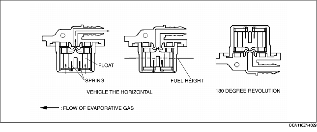

Rollover valve construction/operation [ZY]
• The rollover valve is built into the fuel tank and cannot be removed.

• The rollover valve consists of a float, and spring.
• The rollover valve utilizes a combination of float weight, spring force, and buoyancy. When the float is sunk in the fuel, the float (valve) closes to block the sealing surface of the passage.